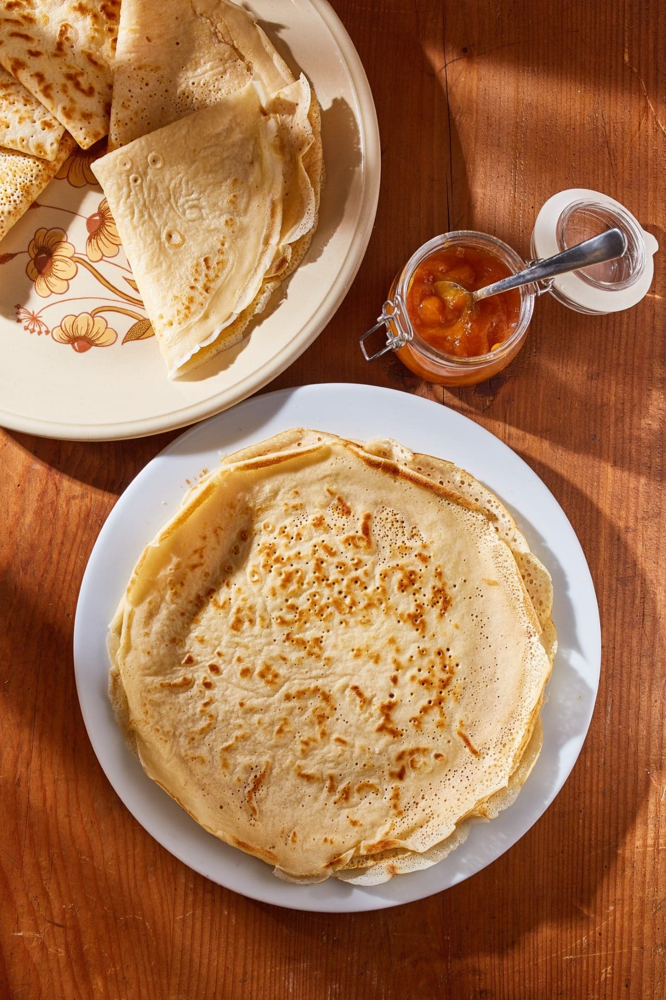

Pancakes

What kind of pancakes are these
These are actually crepés as many people call them
but I prefer to call them simply pancakes.
After it's made it has to be rolled up unlike the fluffy variant.
Ingredients
- 250 g flour
- 1 spoon powdered sugar
- 2 eggs
- a pinch of salt
- 1 teaspoon baking powder
- 250 ml sparkling water
- 350 ml milk
Steps
- mix all the ingredients in a bowl
- whisk until smooth
- preheat a pan to medium heat
- fry a portion for 1-2 minutes on each side
- roll up with jam an enjoy!